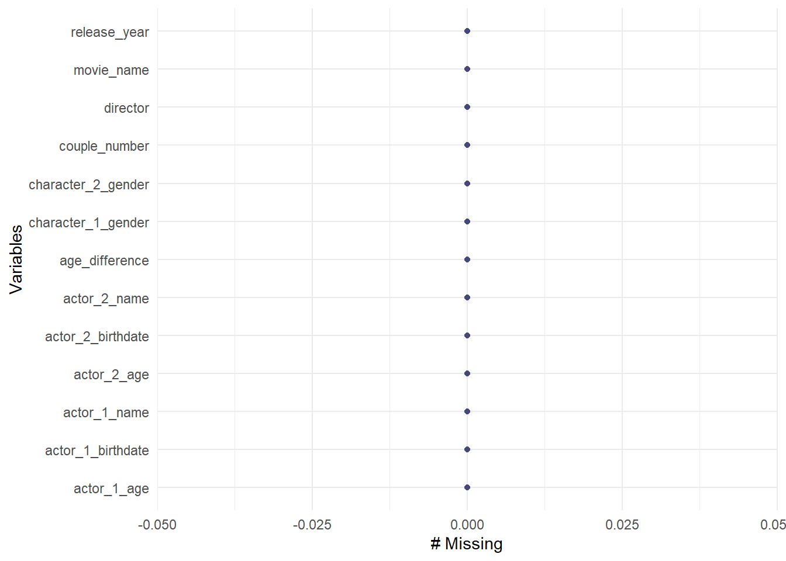
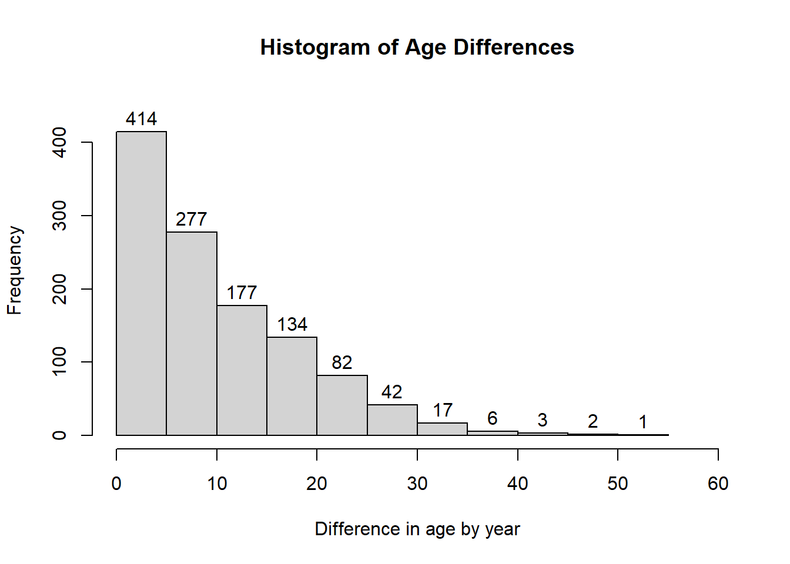
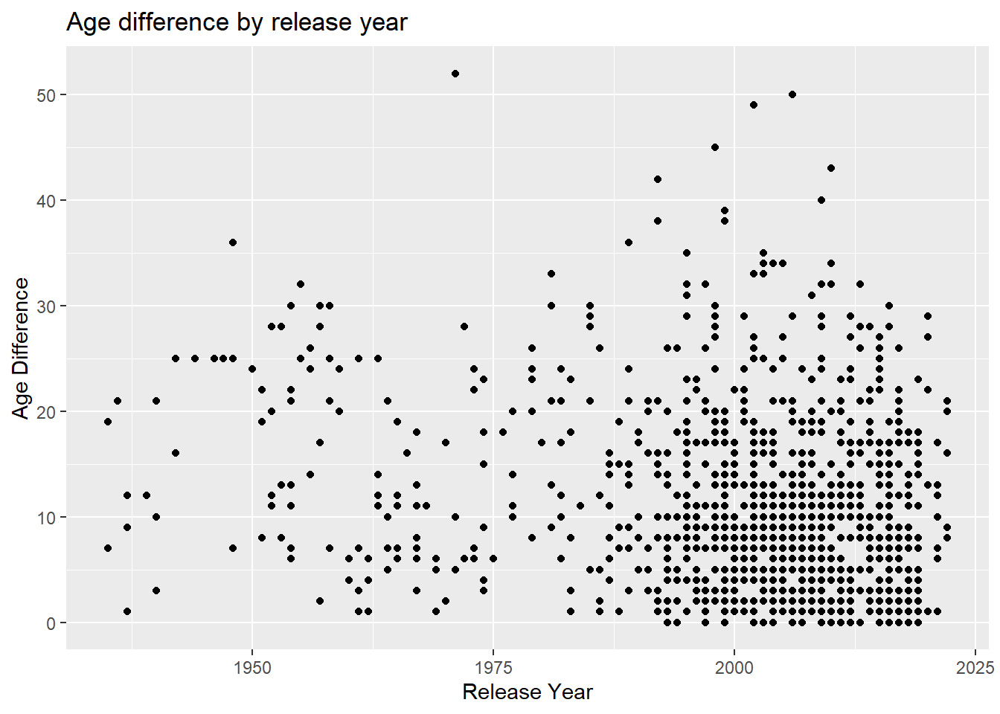
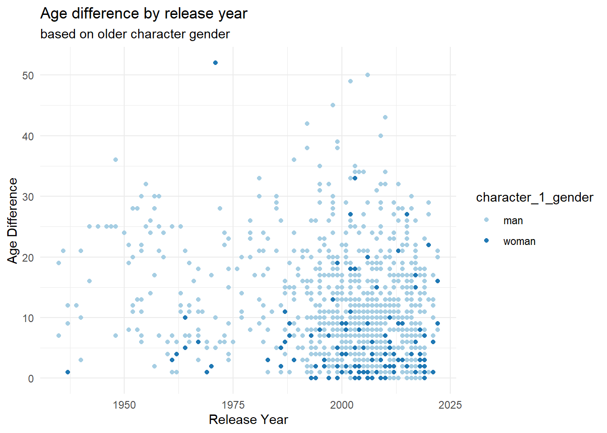
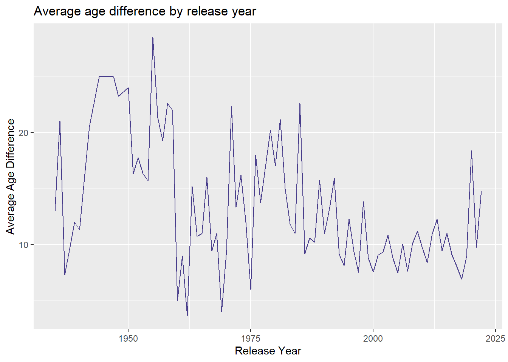
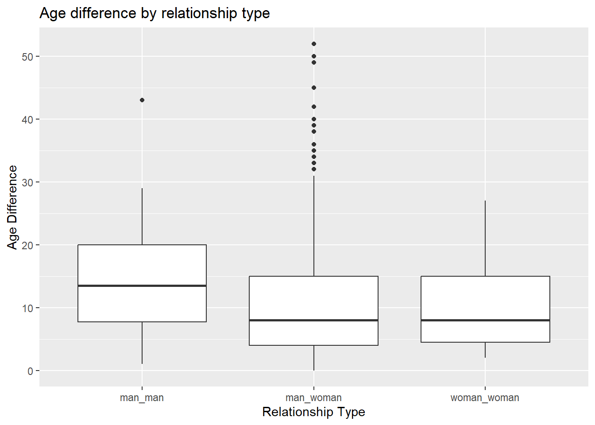
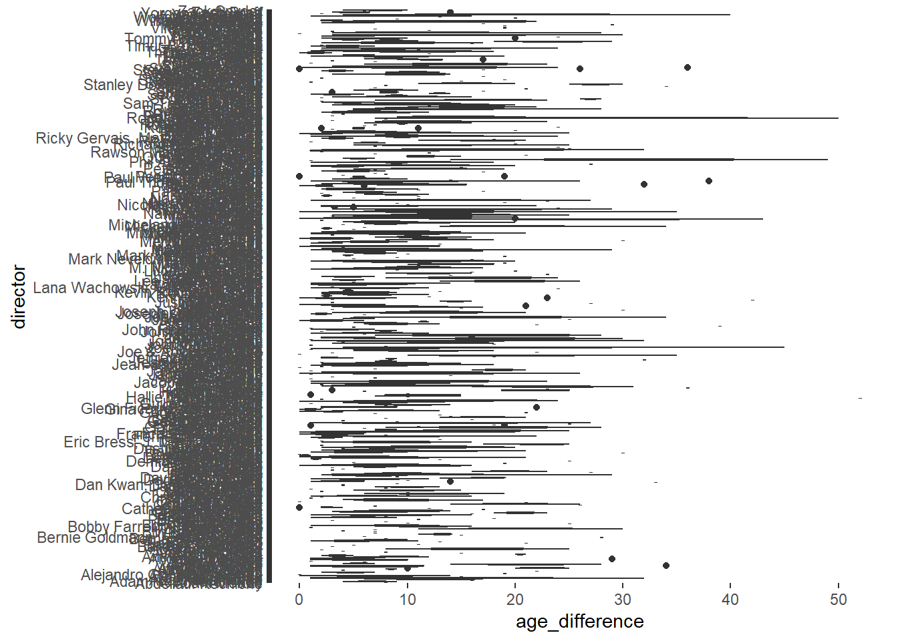
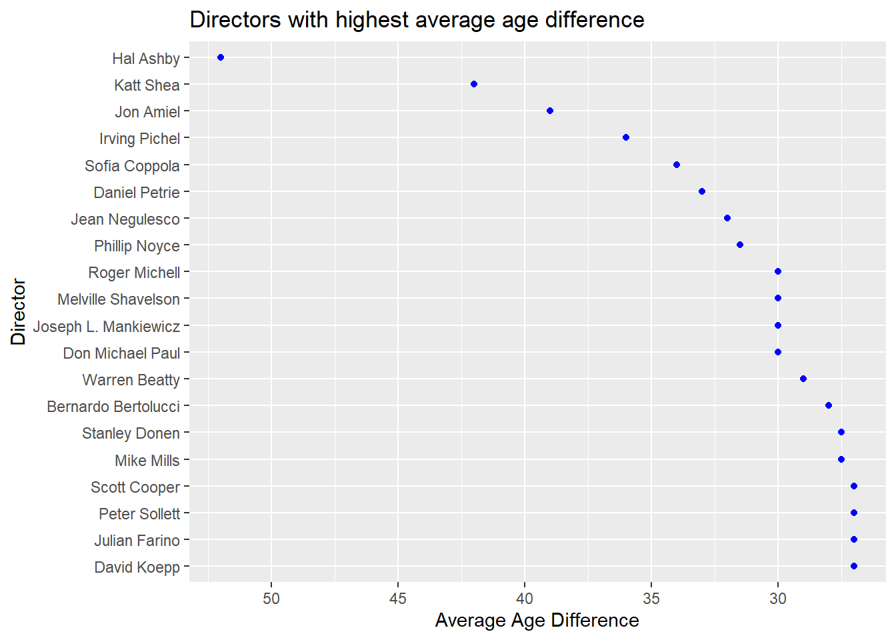

library(tidytuesdayR)
library(tidyverse)
library(dplyr)
library(naniar)
library(forcats)Tidy Tuesday Exercise
For this exercise, I will be using data cleaning and exploratory analysis on this week’s TidyTuesday data set. The data is on Hollywood Age Gaps showing the age difference between love interests on various films. The data set includes variables for Movie Title, Release Year, Director, and various character-related information.
Possible questions to explore
- Does the average age difference change over different release years?
- Does age difference differ between mixed-gender and same-gender couples?
- What directors have the highest average age difference?
To begin, let’s load the packages and the data set.
Load packages
Load data from TidyTuesday
This part of the code used taken from the readme file on the GitHub repository.
tuesdata <- tidytuesdayR::tt_load('2023-02-14')
tuesdata <- tidytuesdayR::tt_load(2023, week = 7)
# load data and assign to age_gaps
age_gaps <- tuesdata$age_gapsOverview of data
First, let’s see an overview of the data.
glimpse(age_gaps)Rows: 1,155
Columns: 13
$ movie_name <chr> "Harold and Maude", "Venus", "The Quiet American", …
$ release_year <dbl> 1971, 2006, 2002, 1998, 2010, 1992, 2009, 1999, 199…
$ director <chr> "Hal Ashby", "Roger Michell", "Phillip Noyce", "Joe…
$ age_difference <dbl> 52, 50, 49, 45, 43, 42, 40, 39, 38, 38, 36, 36, 35,…
$ couple_number <dbl> 1, 1, 1, 1, 1, 1, 1, 1, 1, 1, 1, 1, 1, 1, 1, 1, 1, …
$ actor_1_name <chr> "Ruth Gordon", "Peter O'Toole", "Michael Caine", "D…
$ actor_2_name <chr> "Bud Cort", "Jodie Whittaker", "Do Thi Hai Yen", "T…
$ character_1_gender <chr> "woman", "man", "man", "man", "man", "man", "man", …
$ character_2_gender <chr> "man", "woman", "woman", "woman", "man", "woman", "…
$ actor_1_birthdate <date> 1896-10-30, 1932-08-02, 1933-03-14, 1930-09-17, 19…
$ actor_2_birthdate <date> 1948-03-29, 1982-06-03, 1982-10-01, 1975-11-08, 19…
$ actor_1_age <dbl> 75, 74, 69, 68, 81, 59, 62, 69, 57, 77, 59, 56, 65,…
$ actor_2_age <dbl> 23, 24, 20, 23, 38, 17, 22, 30, 19, 39, 23, 20, 30,…summary(age_gaps) movie_name release_year director age_difference
Length:1155 Min. :1935 Length:1155 Min. : 0.00
Class :character 1st Qu.:1997 Class :character 1st Qu.: 4.00
Mode :character Median :2004 Mode :character Median : 8.00
Mean :2001 Mean :10.42
3rd Qu.:2012 3rd Qu.:15.00
Max. :2022 Max. :52.00
couple_number actor_1_name actor_2_name character_1_gender
Min. :1.000 Length:1155 Length:1155 Length:1155
1st Qu.:1.000 Class :character Class :character Class :character
Median :1.000 Mode :character Mode :character Mode :character
Mean :1.398
3rd Qu.:2.000
Max. :7.000
character_2_gender actor_1_birthdate actor_2_birthdate actor_1_age
Length:1155 Min. :1889-04-16 Min. :1906-10-06 Min. :18.00
Class :character 1st Qu.:1953-05-16 1st Qu.:1965-03-25 1st Qu.:33.00
Mode :character Median :1964-10-03 Median :1974-07-30 Median :39.00
Mean :1960-09-07 Mean :1971-01-29 Mean :40.64
3rd Qu.:1973-08-07 3rd Qu.:1982-04-07 3rd Qu.:47.00
Max. :1996-06-01 Max. :1996-11-11 Max. :81.00
actor_2_age
Min. :17.00
1st Qu.:25.00
Median :29.00
Mean :30.21
3rd Qu.:34.00
Max. :68.00 There are 1155 observations with 13 variables. The earliest movie is from 1935 and the most recent from 2022. The maximum age difference is 52 years, and the other variables can use age and birthday of the actors to calculate age difference. Next, we can check for missing data points.
#check for missing points
gg_miss_var(age_gaps)Warning: The `guide` argument in `scale_*()` cannot be `FALSE`. This was deprecated in
ggplot2 3.3.4.
ℹ Please use "none" instead.
ℹ The deprecated feature was likely used in the naniar package.
Please report the issue at <https://github.com/njtierney/naniar/issues>.
#check for NAs
any(is_na(age_gaps))[1] FALSEIt looks like this is a complete dataset! Next we can explore the data by each variable.
Exploring the data
Since age_difference is our outcome of interest, we can look at the distribution of age differences.
#histogram of age differences
hist(age_gaps$age_difference,
labels = TRUE,
xlab = "Difference in age by year",
main = "Histogram of Age Differences",
ylim = c(0,450),
xlim = c(0,60))
A majority of the age differences are below 20 years with most being below 5 years. The highest age difference is approximately 55 years.
We can also look at the distribution of observations based on release year.
#table function for count of observations for each year
table(age_gaps$release_year)
1935 1936 1937 1939 1940 1942 1944 1946 1947 1948 1950 1951 1952 1953 1954 1955
2 1 3 1 3 2 1 1 1 4 1 3 4 3 7 2
1956 1957 1958 1959 1960 1961 1962 1963 1964 1965 1966 1967 1968 1969 1970 1971
3 4 5 2 2 4 3 5 4 5 1 7 1 3 2 3
1972 1973 1974 1975 1976 1977 1979 1980 1981 1982 1983 1984 1985 1986 1987 1988
3 5 6 1 1 4 5 1 5 6 6 1 5 5 7 5
1989 1990 1991 1992 1993 1994 1995 1996 1997 1998 1999 2000 2001 2002 2003 2004
9 6 7 13 15 14 36 18 35 28 50 34 38 50 38 38
2005 2006 2007 2008 2009 2010 2011 2012 2013 2014 2015 2016 2017 2018 2019 2020
34 40 46 47 44 28 34 34 30 33 40 44 35 40 20 5
2021 2022
8 5 Most of the data points are from ~1980 to 2019.
Question 1
Next, we can look age difference based on release year.
ggplot(age_gaps, aes(release_year, age_difference))+
geom_point()+
labs(x = "Release Year",
y = "Age Difference",
title = "Age difference by release year")
No clear relationship between release year and age difference but that could be due to a majority of the data points being from the last 50 years. We can also look at the average age difference per year. We can also look at the gender of the older character since character 1 is listed as the older character in the data set.
ggplot(age_gaps, aes(release_year, age_difference, color = character_1_gender))+
geom_point()+
labs(x = "Release Year",
y = "Age Difference",
title = "Age difference by release year",
subtitle = "based on older character gender")+
theme_minimal()+
scale_color_brewer(palette = "Paired")
When the gender of the older character is added, there appears to be more older male characters compared to older female characters, and when females are older, the age difference tends to be below 15 years. There is an easily identifiable outlier around 1973 that has an age difference over 50.
We can also look at the mean age difference by release year.
age_gaps %>%
group_by(release_year) %>%
summarise(mean_age_diff = mean(age_difference)) %>% #average age difference for each release year
ggplot(aes(release_year, mean_age_diff))+
geom_line(color = "darkslateblue")+
labs(title = "Average age difference by release year",
x = "Release Year",
y = "Average Age Difference")
There still doesn’t seem to be a clear relationship between release year and age difference, but there does seem to be a stabilization at approximately 10 years by 2000.
Question 2
I would also like to explore if there is a a difference between mixed-gender and same-gender couples. First, I’ll need to create a new variable called relationship to denote the groups.
#create relationship variable and reassign to age_gaps
age_gaps <- age_gaps %>%
mutate(relationship = case_when(character_1_gender == "man" & character_2_gender == "woman" ~ "man_woman",
character_1_gender == "woman" & character_2_gender == "man" ~ "man_woman", #needed to account for either gender as character 1
character_1_gender == "man" & character_2_gender == "man" ~ "man_man",
character_1_gender == "woman" & character_2_gender == "woman" ~ "woman_woman"))
glimpse(age_gaps)Rows: 1,155
Columns: 14
$ movie_name <chr> "Harold and Maude", "Venus", "The Quiet American", …
$ release_year <dbl> 1971, 2006, 2002, 1998, 2010, 1992, 2009, 1999, 199…
$ director <chr> "Hal Ashby", "Roger Michell", "Phillip Noyce", "Joe…
$ age_difference <dbl> 52, 50, 49, 45, 43, 42, 40, 39, 38, 38, 36, 36, 35,…
$ couple_number <dbl> 1, 1, 1, 1, 1, 1, 1, 1, 1, 1, 1, 1, 1, 1, 1, 1, 1, …
$ actor_1_name <chr> "Ruth Gordon", "Peter O'Toole", "Michael Caine", "D…
$ actor_2_name <chr> "Bud Cort", "Jodie Whittaker", "Do Thi Hai Yen", "T…
$ character_1_gender <chr> "woman", "man", "man", "man", "man", "man", "man", …
$ character_2_gender <chr> "man", "woman", "woman", "woman", "man", "woman", "…
$ actor_1_birthdate <date> 1896-10-30, 1932-08-02, 1933-03-14, 1930-09-17, 19…
$ actor_2_birthdate <date> 1948-03-29, 1982-06-03, 1982-10-01, 1975-11-08, 19…
$ actor_1_age <dbl> 75, 74, 69, 68, 81, 59, 62, 69, 57, 77, 59, 56, 65,…
$ actor_2_age <dbl> 23, 24, 20, 23, 38, 17, 22, 30, 19, 39, 23, 20, 30,…
$ relationship <chr> "man_woman", "man_woman", "man_woman", "man_woman",…Now we can group by relationship and plot age difference.
age_gaps %>%
ggplot()+
geom_boxplot(aes(relationship, age_difference))+
labs(x = "Relationship Type",
y = "Age Difference",
title = "Age difference by relationship type")
It looks like the man_woman and woman_woman tend to have a similar median age difference with man_man having a higher median age difference. The man_woman category also appears to be responsible for most of the high age differences as shown with the outliers.
Question 3
Finally, let’s look into the third exploratory question about directors and age differences.
#count the number of directors in the dataset
length(unique(age_gaps$director))[1] 510There are 510 directors in the dataset. Let’s graph age difference by director.
ggplot(age_gaps, aes(x = director, y = age_difference))+
geom_boxplot()+
labs()+
coord_flip()
Alright, so we obviously have too many data points to really see any trends. Let’s arrange the data be descending age difference and only look at the top 20 directors
age_gaps2 <- age_gaps %>%
group_by(director) %>% #group by director
summarise(mean_age_diff = mean(age_difference)) %>% #create average age difference for each director
arrange(desc(mean_age_diff)) %>% #order by descending age difference
slice(1:20) #use only the top 20 rows
ggplot(age_gaps2, aes(x = fct_reorder(director, mean_age_diff), y = mean_age_diff))+ #needed to use fct_reorder to display ascending age difference rather than alphabetical
geom_point(color = "blue")+
labs(y = "Average Age Difference",
x = "Director",
title = "Directors with highest average age difference")+
coord_flip()+ #flipped axes so director names were easier to read
scale_y_reverse() #flipped axis to display in descending order
Hal Ashby have the highest average age difference between characters by far, followed by Katt Shea, Jon Amiel, and Irving Pichel which all had age differences over 35 years.